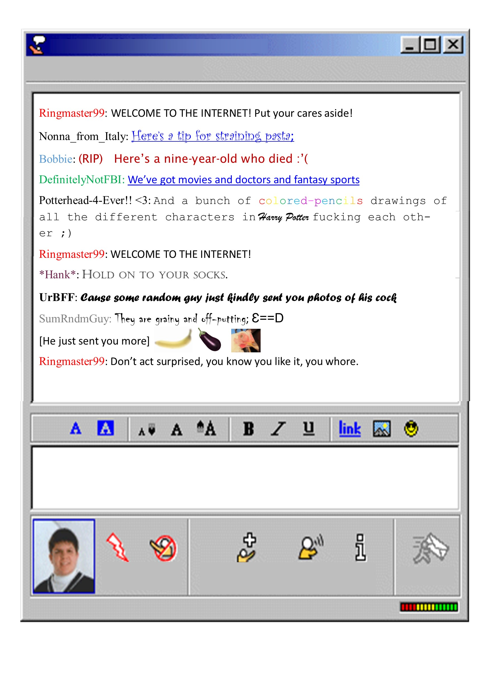
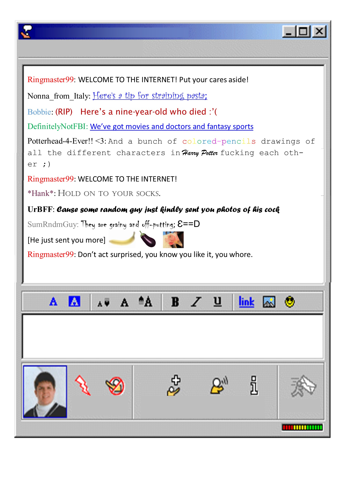
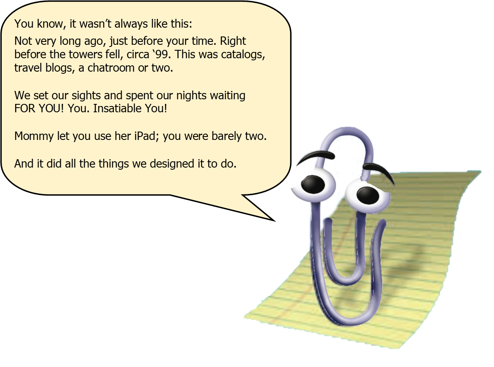
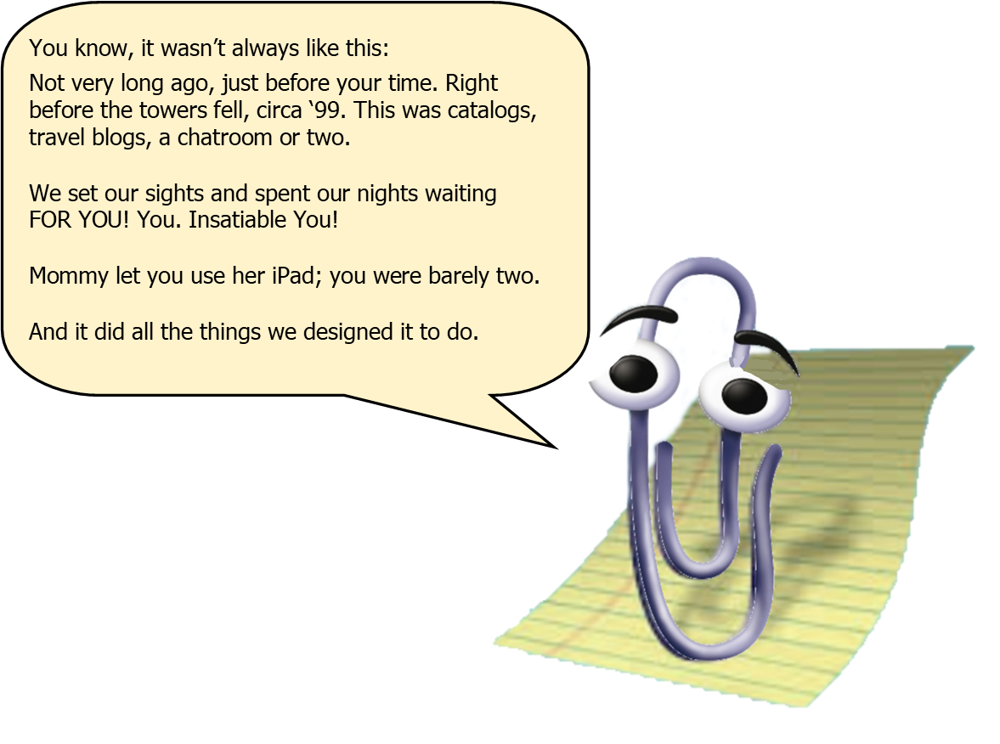

Welcome
to the
Internet
to the
Internet

 


 



Recreator’s Note
In the music video, Burnham presents himself as a villainous snake oil salesperson archetype, wearing round, black/mirrored sunglasses, and never revealing his eyes. The room is dark with little green lights projected across him. The lyrics epitomize the carefully crafted destructive nature of the internet, highlighting the vast array of silly, innocent, manipulative, horrific things that can be found on the internet and, more importantly, how it’s a distraction from our real responsibilities.
I argue that one of Inside’s key themes is found in the lyrics, “Apathy’s a tragedy, and boredom is a crime. Anything and everything all of the time.” These satirical lines exemplify society’s absolute need to be entertained or occupied all the time. Gone are the days where kids can be bored, when people cared about their neighbors. Now, people fight for only themselves, and screens are always present, everywhere.
I refer to the method of using the subject of the song as the way through which to display the lyrics as meta-representation.
After completing the first set of lyrics (“’Unpaid Intern’- Reaction Video”), when I decided to expand this idea into a more comprehensive project rhetorically displaying Burnham’s lyrics, “Welcome to the Internet” was the first song that came to mind. It was, by far, the easiest idea to conceive and hardest one to execute. It pushed my limited knowledge of picture editing. I knew immediately I wanted to lean into this meta-representation of how we engage with the internet, which meant paying careful attention to common ways the internet was experienced.
The images I used for the lyrics play into the deep-seeded integration of the internet in our society, I used a timeline of what the internet used to look like, starting with early internet iterations of UNIX, moving into circa mid-90’s Internet Explorer, followed closely by AOL-type chat rooms. Then browsers that are familiar to readers now (in 2025), particularly tracking search histories, then using incognito mode to “hide” from tracking cookies. In the middle of the song, Burnham inserts a monologue, and “someone” needed to be the presenter. Using Microsoft’s virtual assistant “Clippy,” though outdated, seemed like the right fit since most readers over 30 or so would recognize Clippy and understand the underscoring connotations that he’s there “to help” (or maybe monitor?). After Clippy, I wanted to transition into more modern forms of engaging with the internet, via handheld devices, hence the screenshot of a phone’s app, and finally, concluding with the rise of AI, specifically ChatGPT.
To me, it was important to keep the aspect ratios unique to each mode of communication/engagement, so the computer browsers are wide and landscape, while my phone screenshot is zoomed in and portrait. I wanted readers to experience the pictures in the same way they would browsing the internet on their own. In a way, displaying Burnham’s lyrics in this manner is like holding up a mirror to the readers, asking them to reflect upon their internet usage.
I argue that one of Inside’s key themes is found in the lyrics, “Apathy’s a tragedy, and boredom is a crime. Anything and everything all of the time.” These satirical lines exemplify society’s absolute need to be entertained or occupied all the time. Gone are the days where kids can be bored, when people cared about their neighbors. Now, people fight for only themselves, and screens are always present, everywhere.
I refer to the method of using the subject of the song as the way through which to display the lyrics as meta-representation.
After completing the first set of lyrics (“’Unpaid Intern’- Reaction Video”), when I decided to expand this idea into a more comprehensive project rhetorically displaying Burnham’s lyrics, “Welcome to the Internet” was the first song that came to mind. It was, by far, the easiest idea to conceive and hardest one to execute. It pushed my limited knowledge of picture editing. I knew immediately I wanted to lean into this meta-representation of how we engage with the internet, which meant paying careful attention to common ways the internet was experienced.
The images I used for the lyrics play into the deep-seeded integration of the internet in our society, I used a timeline of what the internet used to look like, starting with early internet iterations of UNIX, moving into circa mid-90’s Internet Explorer, followed closely by AOL-type chat rooms. Then browsers that are familiar to readers now (in 2025), particularly tracking search histories, then using incognito mode to “hide” from tracking cookies. In the middle of the song, Burnham inserts a monologue, and “someone” needed to be the presenter. Using Microsoft’s virtual assistant “Clippy,” though outdated, seemed like the right fit since most readers over 30 or so would recognize Clippy and understand the underscoring connotations that he’s there “to help” (or maybe monitor?). After Clippy, I wanted to transition into more modern forms of engaging with the internet, via handheld devices, hence the screenshot of a phone’s app, and finally, concluding with the rise of AI, specifically ChatGPT.
To me, it was important to keep the aspect ratios unique to each mode of communication/engagement, so the computer browsers are wide and landscape, while my phone screenshot is zoomed in and portrait. I wanted readers to experience the pictures in the same way they would browsing the internet on their own. In a way, displaying Burnham’s lyrics in this manner is like holding up a mirror to the readers, asking them to reflect upon their internet usage.
BACK
NEXT